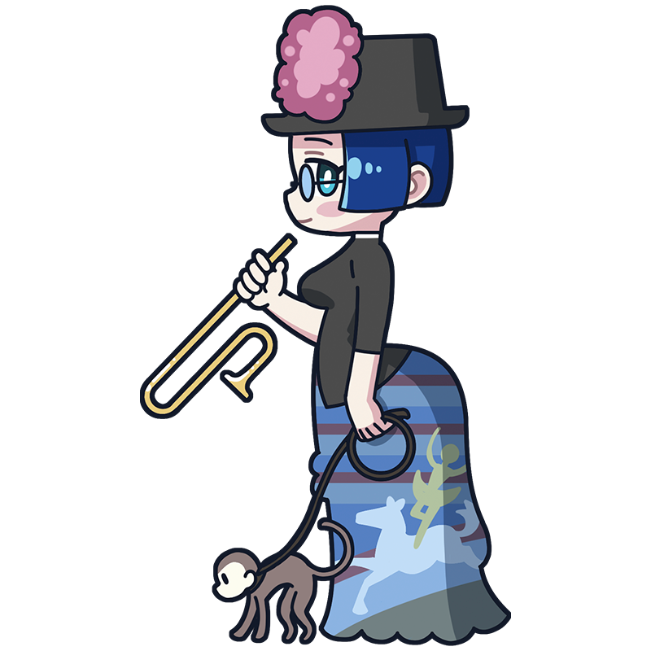

Hehe. According to my calculations,
I feel like playing by the river today.
Seurat
The dazzling brilliance of the colors
is the result of meticulous technique and calculation.
A French muse classified as a neo-impressionist. She excels at the technique of "pointillism" and calm, precise production based on color theory, but she often clashes with her fellow muses who place more importance on passion. Her pet monkey is skilled at acrobatics.
Style
Hometown
France
Classics
- "A Sunday Afternoon on the Island of La Grande Jatte"
- "Circus Sideshow"
- "Bathers at Asnières" etc.
This is the Seurat piece!
A Sunday Afternoon on the Island of La Grande Jatte
This is Georges Seurat’s masterpiece, depicting people relaxing on an island in the Seine River during the summer in France. It employs the “pointillism” technique, in which paint is applied in small dots without mixing, resulting in a complex color palette that retains its vividness. The orderly arrangement of the figures gives the painting a more intellectual feel compared to other Impressionist works, making it a quintessential example of Seurat’s style, which incorporated color theory into his art.
Year
1884-1886
Medium
Oil on canvas
Dimension
207.6 cm x 308 cm
Collection
Art Institute of Chicago
（USA)
Who is Seurat?
Georges Seurat
A 19th-century French painter who built on Impressionism to create a distinctive style known as pointillism, applying small dots of color based on scientific theory. Through this method, he founded the Neo-Impressionist movement. His carefully constructed works balance calmness with subtle vibrancy. Although he died at just 31, his ideas and paintings had a lasting impact on later movements such as Fauvism. Quiet and reserved, he spoke little about his private life, even keeping the existence of a child with his partner hidden from his parents.
Full Name
Georges Pierre Seurat
Born
December 2, 1859
Died
March 29, 1891(aged 31)